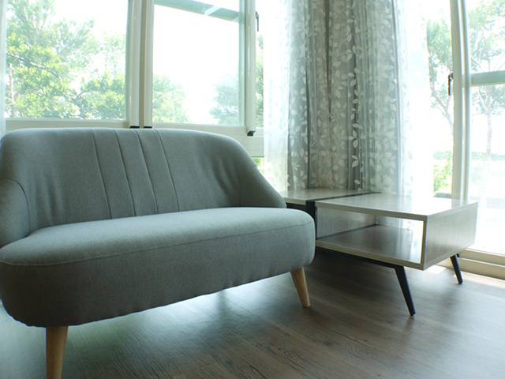

品牌大事紀
品牌沿革與里程碑整理中，將於正式資料確認後公開。
易立構，從日常生活出發，思考空間應有的樣子。

簡約，是把需要的留下；舒適，是讓日常自在發生；安心，是願意把看不見的細節說清楚。
這是易立構網站所傳達的生活提案，也是每一次空間討論的出發點。
品牌沿革與里程碑整理中，將於正式資料確認後公開。
專利名稱、證號與適用範圍待正式文件補齊後展示。
正式電話、電子信箱及地址待確認。你可以先整理空間需求，產生場勘諮詢單。
填寫需求無論已有基地，或還在描繪理想生活，我們都想聽聽你的想法。
開始場勘諮詢